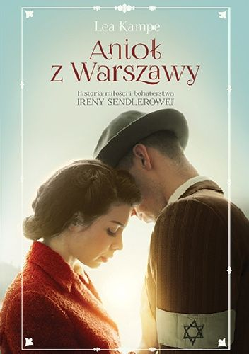

Menu KSIĄŻEK
Wróc do działu literatura piękna
"Anioł z Warszawy"
Lea Kampe
Krótki opis książki:
ONA NIOSŁA NADZIEJĘ NAJSŁABSZYM. ON DAWAŁ JEJ SIŁĘ.
Warszawa, 1940 rok. Gdy naziści tworzą getto w okupowanej stolicy, Irena nie zamierza siedzieć z założonymi rękami.
W jego murach zamknięto przecież tysiące osób potrzebujących pomocy… Jej pomocy.
Dzięki wsparciu przyjaciół dziewczyna wyprowadza żydowskie dziecko na aryjską stronę – najpierw jedno, potem drugie, a później kolejne.
Nadaje im nową tożsamość, a prawdziwe nazwiska zapisuje na bibułkach, które potem starannie ukrywa.
Wie, jak wiele ryzykuje, ale każdego dnia wraca do getta. Bo za jego murami pozostał ktoś jeszcze, ktoś najbliższy sercu Ireny – Adam, miłość jej życia…
Niezwykła historia Ireny Sendlerowej, jednej z największych bohaterek XX wieku, którą wreszcie możemy poznać taką,
jaka była: pełną pasji, niezłomną i gotową do poświęceń. Poruszająca opowieść o sile charakteru i uczuciu, które rozkwitło w cieniu wojny.
Dzięki swojej odwadze ocaliła tysiące dzieci.
Czy uda jej się ocalić także miłość?

Informacje oraz zdjecia zostały zaczerpnięte ze strony Lubimyczytać.pl
©Strona została wykonana przez
Aleksandrę Oblak (informacje o książkach)
oraz Mateusza Stanikowskiego (strona internetowa)
2a - 4LO Lublin